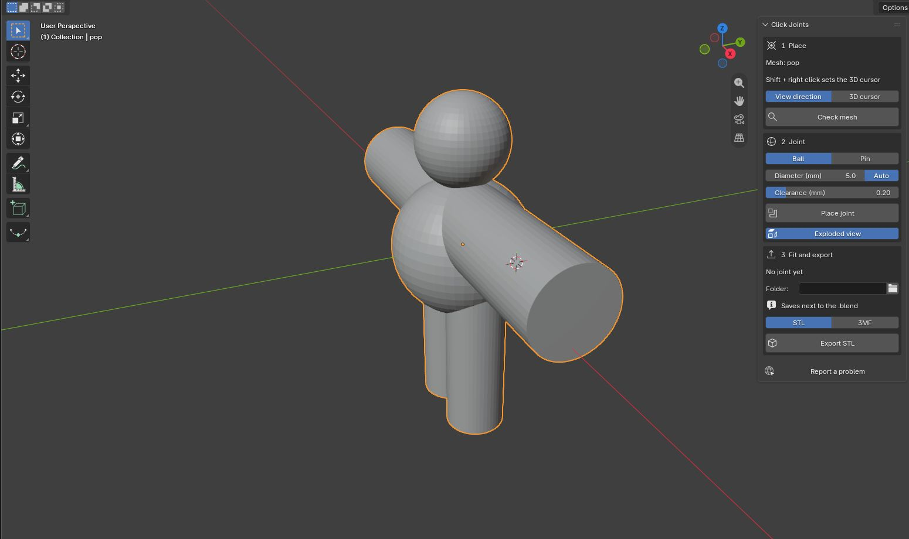
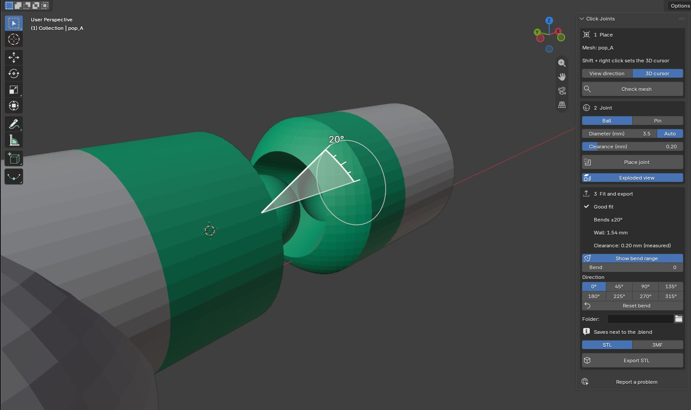
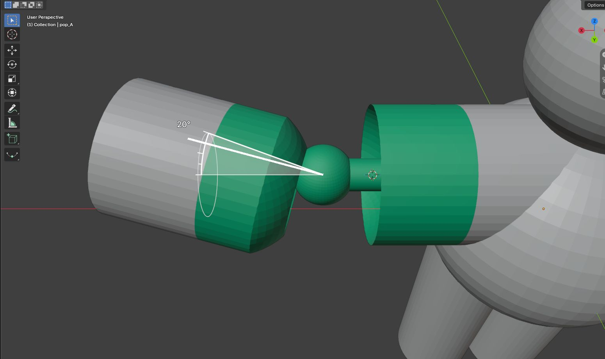
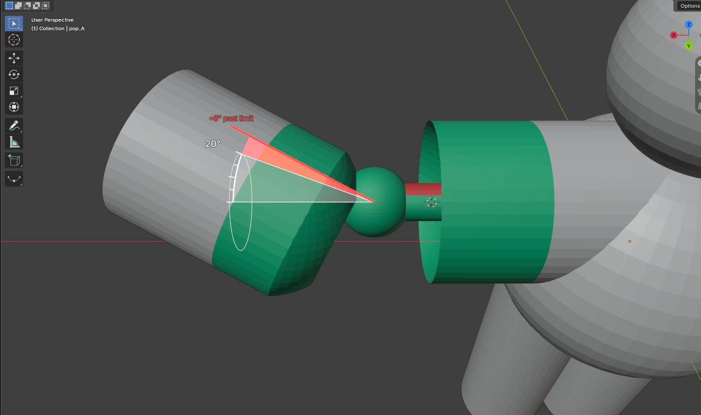

Guide · Blender for 3D printing
How to make a ball joint in Blender for 3D printing
You have a figure, a doll or a prop in Blender and you want the arm or the head to move after printing. That means a ball and socket: a ball on one part, a hollow on the other, and a small gap between them. This page shows how to cut one, how big the gap should be, and how to check the joint before you print.
The three things that go wrong
You can build a ball joint by hand: a UV sphere, a Boolean union on one part, a slightly larger sphere as a Boolean difference on the other. It works, but three things only show up after the print:
- The gap is wrong. Too small and the ball is fused or stuck. Too big and the arm hangs loose. The gap is set by the second sphere, and it is easy to get it off by a few tenths.
- The wall is too thin. The hollow eats into the part. Next to the socket only a thin skin is left, and it cracks when you push the ball in.
- It does not bend far. The neck of the ball hits the rim of the socket after a few degrees. You find out when the figure can not lift its arm.
The steps below use Click Joints, a free Blender add-on made by us at Dortus. It does the cut and shows those three numbers on the model. If you prefer to work by hand, the numbers in the section What gap and wall to use still apply.
Step by step
- Install Click Joints. In Blender 4.2 or newer: Edit, Preferences, Get Extensions, search joints, Install. Or download it from Blender Extensions. Then press N in the 3D viewport and open the Click Joints tab.
- Check the model. Select it and click Check mesh. If the size is not between 5 and 500 mm, the panel offers Convert to mm. If the mesh is not watertight, it offers Make watertight, on a copy.
- Set the 3D cursor on the joint. Shift + right click on the spot where the ball should sit, for example the shoulder. Choose whether the joint axis follows the view direction or the 3D cursor.
- Place the joint. Under 2 Joint choose Ball. Leave Diameter on Auto: it picks the largest ball with a good fit at that spot. Set the clearance (0.20 mm by default) and click Place joint. The model is cut into two watertight parts.
- Read the fit. Under 3 Fit and export the panel says Good fit, Tight or Too thin, with the wall and the clearance in mm and how far the joint bends, for example Bends ±20°.
- Export. Pick STL or 3MF and click Export. You get one file per part, in millimetres.



What gap and wall to use
- Clearance: start at 0.20 mm. That is the default in Click Joints. Between 0.1 and 0.3 mm is typical for FDM and resin; a looser printer needs more. Print one test joint before the whole figure, every printer is different. The free fit test strip prints five joints from 0.10 to 0.30 mm at once.
- Wall: aim for 1.5 mm or more next to the socket. Click Joints marks a wall under 1.5 mm as Tight and under 0.8 mm as Too thin, and tells you the number.
- Ball size: about 60% of the narrowest width at the cut. That is what Auto starts from. It then picks the largest ball that still gives a good fit, in steps of 0.5 mm.
These numbers are measured in Blender, not print tested by us yet. They are a starting point, not a promise that your print clicks.
How far will it bend?
The bend is limited by the neck of the ball hitting the rim of the socket. Click Joints measures that in Blender and shows it as a protractor on the model. Drag Bend in the panel to tilt the part. Past the measured limit, the spot where it hits turns red, with the number of degrees past the limit.

Knees and elbows: a hinge, not a ball
A ball joint turns in every direction. For a knee or an elbow you usually want a hinge that bends one way and stops, so the leg does not bend backwards. That is in Click Joints Pro: a hinge with an end stop at 90°, 115° or 135°, and for a rigged figure one button that places a joint at every shoulder, elbow, hip, knee and neck.